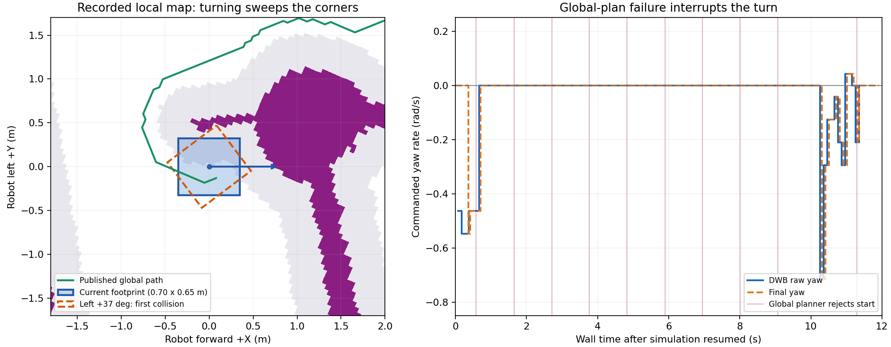

경로는 왼쪽으로 우회하지만, 현재 자세에서 연결하지 못하는 상황
2026-10-27 · 실행 중인 legged_range_trial 관찰. 멈춘 시뮬레이터를 약 12초 재생하고 다시 Pause로 복구했다. 새 목표나 별도 속도 명령은 보내지 않았다. Navigation 설정은 이번 진단에서 변경하지 않았다.
grid start invalid → FollowPath 취소 → 같은 목표 재시도였다. 왼쪽으로 작은 회전 후보는 존재하지만, 현재 위치에서 크게 제자리 회전하는 도중에는 footprint 모서리가 기록된 장애물 셀에 닿는다.
왼쪽 그림: 오른쪽이 로봇 전방(+X), 위쪽이 로봇 왼쪽(+Y)이다. 보라색은 lethal/unknown 셀, 회색은 비용 영역, 파란 사각형은 현재 footprint, 주황색은 왼쪽 37° 회전한 footprint이다. 초록색은 해당 지도 기록 직전에 수신된 전역 경로이며, 로봇 후방 쪽으로 빠져 왼쪽을 도는 모양이다. 이 경로가 현재 자세부터 실행 가능한 궤적이라는 뜻은 아니다.
오른쪽 그림: 분홍 세로선은 전역 플래너의 출발점 거절이다. 첫 거절 후 회전 명령이 끊기고, 잠깐 다시 계획에 성공했을 때 회전을 재개했다가 다시 취소됐다. ROS 시간 정지 중 수신된 명령은 이 그래프에서 제외했다.
실제 기록에서 확인한 내용
| 항목 | 결과 |
|---|---|
| 전역 계획 실패 | 관찰 중 grid start invalid 10회. 목표는 (6.46, −9.62). |
| Collision Monitor | 수신한 raw/safe 명령 40쌍의 속도값이 같았다. 이번 반복 정지를 Collision Monitor의 속도 차단으로 설명할 근거는 없다. 최종 watchdog은 명령 공백 등에 대해 0을 발행했다. |
| 전역 clearance | 실행값 0.45m. 해당 격자 구현은 0.05m 셀에 √2×해상도 보정을 더한다. 출발점 거절과 실제 사각형 충돌은 같은 판정이 아니다. |
| DWB 동작 후보 | 전진 0~0.6m/s, 좌우 회전 ±0.8rad/s. 후진·옆걸음은 설정상 후보에 없다. 예측 시간 2초. |
| 속도 입력 | 이번에도 /Odometry 104개 모두 twist=0. 정상적인 실제 속도 피드백으로 검증된 상태가 아니다. |
기록된 지도에 설치된 DWB 충돌 검사를 재실행
Humble의 StandardTrajectoryGenerator와 ObstacleFootprintCritic을 사용했다. 실제 입력과 같이 초기 속도는 0, footprint는 0.70×0.65m이다. 로봇에는 명령을 보내지 않았다.
| 기록 | 충돌 검사를 통과한 좌/우 후보 | 제자리 회전 중 최초 충돌 각도 |
|---|---|---|
| 첫 local snapshot | 왼쪽 9/120, 오른쪽 5/120 | 왼쪽 37°, 오른쪽 25° |
| 마지막 local snapshot | 왼쪽 2/120, 오른쪽 0/120 | 왼쪽 21°, 오른쪽 4° |
7개 지도·자세 표본의 왼쪽 첫 충돌은 21~40°였다. 1°씩 회전하며 검사한 결과이며, 지도·TF 오차와 격자 판정이 포함된다. Gazebo에서 실제로 충돌했다고 단정하는 수치가 아니다. 이 재생은 장애물 critic만의 검사이며, PathAlign·PathDist·Oscillation 등 전체 점수와 상태를 재현하지 않았다. 따라서 오른쪽이 선택된 정확한 점수 원인을 확정하지는 않았다.
다음 수정 방향
좌회전 명령을 고정하거나 margin을 다시 줄이는 대신, 현재 자세 → 회전 가능한 공간 → 우회 경로를 연결하는 짧은 탈출 동작이 필요하다. 전역 출발점 거절·실제 footprint 충돌·센서 공백을 구분하고, stuck일 때만 제한된 이동·회전 후보를 검사하는 방식이 적절하다.
- 이미 충돌한 상태인지, 단지 전역 clearance 안에 있는지 먼저 구분한다.
- 실제 관측된 여유 공간 안에서 짧게 물러나거나 호를 그리는 후보를 검사한다. 후진은 후방 관측과 전체 이동 구간 충돌 검사가 확보된 경우에만 허용한다.
- 좌/우 회전의 전체 footprint 이동을 검사해 가능한 방향을 선택한다.
- 유효한 전역 출발점으로 복귀하면 재계획하고 원래 목표 추종을 재개한다.
현재 나머지 방향 최소 거리 필터가 1m이므로, 후진 허용값만 음수로 바꾸는 것은 근접 후방 관측을 보장하지 않는다. 600초 대기 설정은 목표 종료를 늦추지만 이 탈출 동작을 추가하지 않는다.
검증 범위: 12초 관찰 + 7개 costmap snapshot의 장애물 critic 재생. 완주/탈출 성공 실험은 수행하지 않았다. 원자료: summary.json, replay.json, runtime.yaml. 참고: Nav2 Humble DWB 평가 코드, DWB 개요.